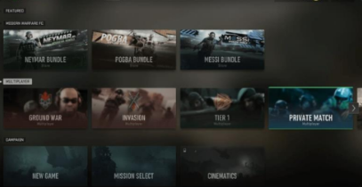
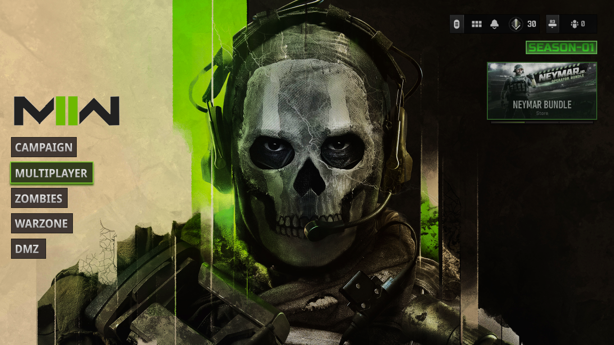
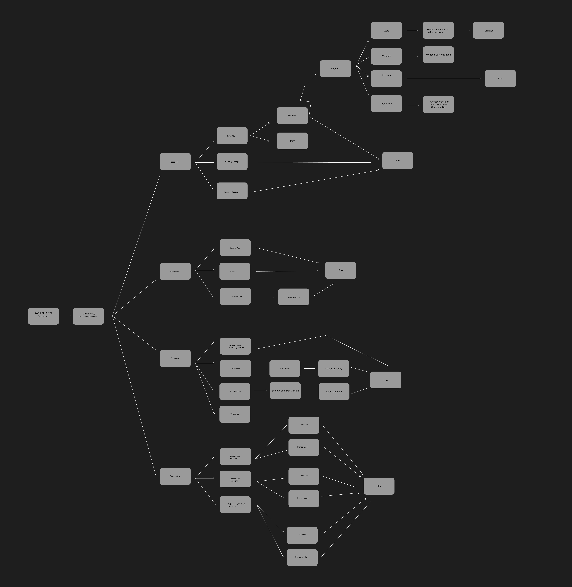
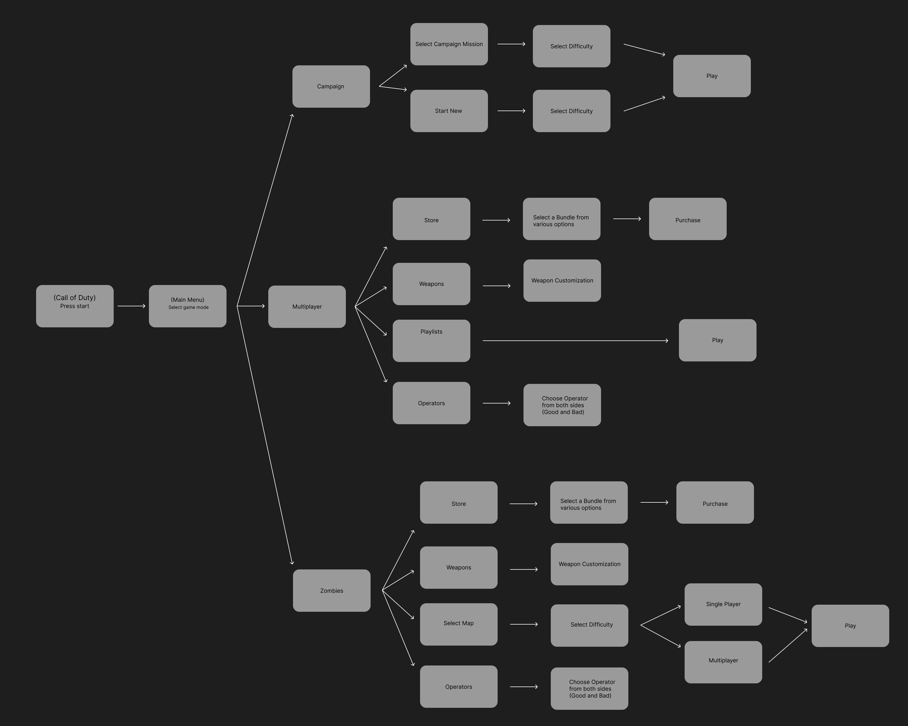
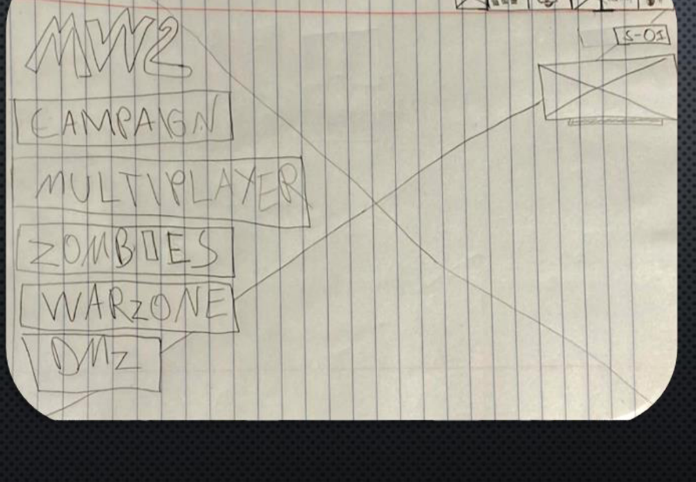

Modern Warfare II Menu Redesign.
Rethinking the 2022 main menu to make game modes easier to find, reduce visual clutter, and give players a more direct starting point.
INDEPENDENT CONCEPT PROJECT
Getting players into the game, without the maze.
This independent redesign began with my own experience playing Call of Duty: Modern Warfare II (2022). I found its menu difficult to navigate: game modes and promotional tiles competed for attention, and finding a specific mode could require moving through multiple rows and directions. I wanted to explore a simpler entry point that puts the main ways to play front and center.
From a dense content grid to a clear starting menu.
The original interface presented featured content, multiplayer options, and campaign choices in a tile-based layout. In my experience, the combination of many choices and both horizontal and vertical navigation made the main action—choosing what to play—feel less immediate.

Make the next action obvious.
What I wanted to improve
Too many competing choices on the opening screen made it harder for me to scan the available modes. Moving across and down a large collection of tiles also made the navigation feel more complicated than necessary.
My design direction
Use a straightforward vertical list of core game modes, make the selected item visually distinct, and keep secondary features available without letting them dominate the main menu.
Reworking the paths through the menu.
I mapped the original navigation and then created a proposed flow for the redesign. The aim was to organize choices around major play categories rather than make players scan through an assortment of content tiles first.


The proposed structure emphasizes a direct choice of mode first, followed by more specific actions inside that mode. This is an architectural proposal rather than evidence that players completed tasks faster.
Starting with a simpler layout.
My low-fidelity hand sketch explored a familiar, left-aligned vertical menu with the game modes stacked in one place. I reserved most of the remaining screen for artwork and kept smaller utility elements near the top. This let me focus on hierarchy before refining the visual details.

A simpler menu that still feels like Modern Warfare.
For the final concept, I drew inspiration from the more direct menu structure of Black Ops 3 while keeping the visual identity grounded in Modern Warfare II's green, black, white, and pale yellow palette.
Game modes first
Campaign, Multiplayer, Zombies, Warzone, and DMZ appear in one vertical stack so the main destinations are visible without scanning a grid. These are proposed concept labels, not a claim that every mode was available in the original 2022 menu.
Clear active state
A bright green outline highlights the selected option, creating a stronger visual cue for where the player is in the menu.
Secondary content
The store promotion moves into a compact panel in the upper-right corner, while Ghost artwork remains the main visual anchor. I also adjusted the logo's coloring to better suit the background.
What this redesign taught me.
This project helped me think about the difference between showing players everything a game offers and helping them quickly understand where to go. By comparing the existing menu, mapping its structure, sketching an alternative, and creating a high-fidelity concept, I practiced using hierarchy and navigation as design tools—not just visual decoration.
What I explored
Prioritizing primary actions, reducing competing interface elements, preserving a recognizable game identity, and making the current selection easier to spot.
What I would do next
Build an interactive prototype and test whether players can find and enter specific game modes more easily. Feedback would help validate—or challenge—the assumptions behind this concept.